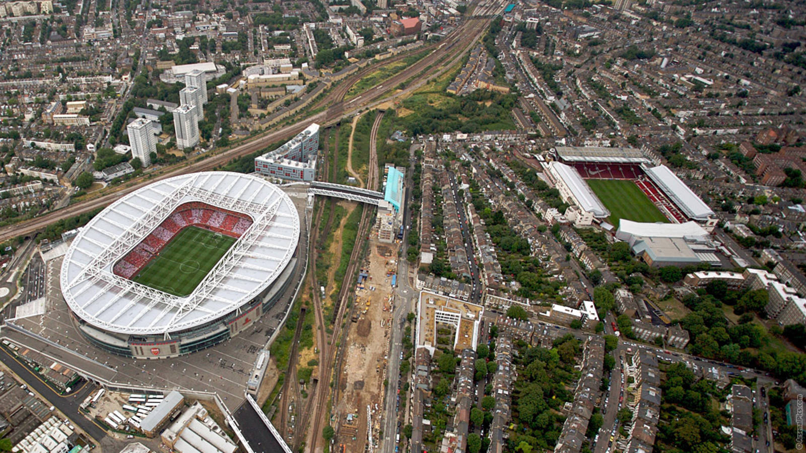
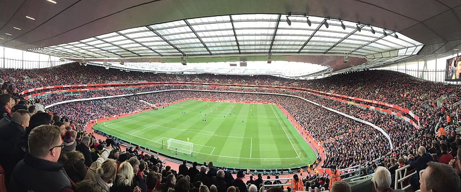

The Arsenal Football Club, nicknamed Gunners is a professional football club based in Islington, London, England that plays in the Premier League. The club has won 13 league titles (including one unbeaten title), a record 14 FA Cups, two League Cups, 16 FA Community Shields, the League Centenary Trophy, one European Cup Winners' Cup, and one Inter-Cities Fairs Cup. The Arsenal supporters are known as Gooners
Arsène Wenger was the longest-serving manager and won the most trophies. He won a record seven FA Cups, and his title-winning team set an English record for the longest top-flight unbeaten league run at 49 games between 2003 and 2004, receiving the nickname The Invincibles.
In 1886 In 2006, they moved to the nearby Emirates Stadium. The motto of the club has long been Victoria Concordia Crescit, Latin for "Victory Through Harmony".
History
In October 1886 munitions workers at the Royal Arsenal in Woolwich founded the club as Dial Square, shortly after it was renamed to Woolwich Arsenal. In 1913, the club crossed the city to Arsenal Stadium in Highbury, becoming close neighbours of Tottenham Hotspur, and creating the North London derby, the following year, they reduced Woolwich Arsenal to simply The Arsenal.
Herbert Chapman, won the club its first silverware in 1930, and his legacy led the club to dominate the 1930s decade. He helped introduce the WM formation, floodlights, and shirt numbers, he also added the white sleeves and brighter red to the club's jersey.
The club metamorphosed during the long tenure of manager Arsène Wenger, appointed in 1996. New, attacking football, an overhaul of dietary and fitness practices, and efficiency with money have defined his reign. Accumulating key players from Wenger's homeland, such as Patrick Vieira and Thierry Henry, Arsenal won a second League and Cup double in 1997–98 and a third in 2001–02. In addition, the club reached the final of the 1999–2000 UEFA Cup, were victorious in the 2003 and 2005 FA Cups, and won the Premier League in 2003–04 without losing a single match, an achievement which earned the side the nickname "The Invincibles". This latter feat came within a run of 49 league matches unbeaten from 7 May 2003 to 24 October 2004, a national record.
Stadium


Widely referred to as Highbury, Arsenal Stadium was the club's home from September 1913 until May 2006. The original stadium was designed by the renowned football architect Archibald Leitch, with a single covered stand and three open-air banks of terracing. The entire stadium was given a massive overhaul in the 1930s: new Art Deco West and East stands were constructed, and a roof was added to the North Bank terrace. Highbury could hold more than 60,000 spectators at its peak, and had a capacity of 57,000 until the early 1990s. The Taylor Report and Premier League regulations obliged Arsenal to convert Highbury to an all-seater stadium in time for the 1993–94 season, thus reducing the capacity to 38,419 seated spectators.
Expansion of Highbury was restricted and in 2000 Arsenal proposed building a new 60,361-capacity stadium at Ashburton Grove, about 500 metres south-west of Highbury. Construction began in 2002 and was completed in July 2006, just in time for the start of the 2006–07 season. The stadium was named after its sponsors, the airline company Emirates, some fans referred to the ground as Ashburton Grove, or the Grove, as they did not agree with corporate sponsorship of stadium names. From the start of the 2010–11 season on, the stands of the stadium have been officially known as North Bank, East Stand, West Stand and Clock end.